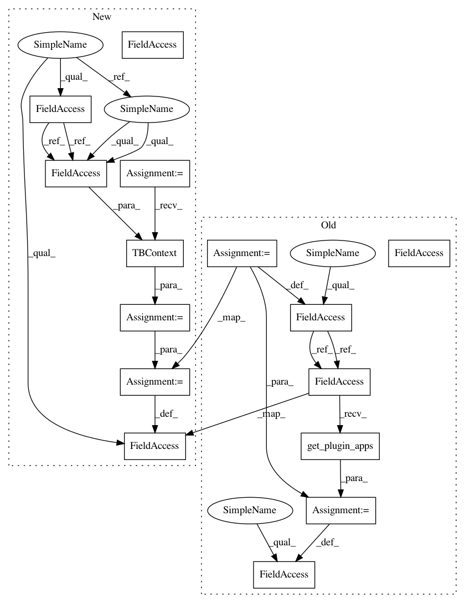

832248cc178ea6149e6066a2fb3b5d115a6eb02f,tensorboard/plugins/distributions/distributions_plugin_test.py,DistributionsPluginTest,set_up_with_runs,#DistributionsPluginTest#Any#,42
Before Change
})
multiplexer.AddRunsFromDirectory(self.logdir)
multiplexer.Reload()
self.plugin = distributions_plugin.DistributionsPlugin()
self.apps = self.plugin.get_plugin_apps(multiplexer, None)
def generate_run(self, run_name):
if run_name == self._RUN_WITH_DISTRIBUTION:
(use_distributions, use_scalars) = (True, False)
After Change
_RUN_WITH_DISTRIBUTION = "_RUN_WITH_DISTRIBUTION"
_RUN_WITH_SCALARS = "_RUN_WITH_SCALARS"
def set_up_with_runs(self, run_names):
self.logdir = self.get_temp_dir()
for run_name in run_names:
self.generate_run(run_name)
multiplexer = event_multiplexer.EventMultiplexer(size_guidance={
// don"t truncate my test data, please
event_accumulator.COMPRESSED_HISTOGRAMS:
self._STEPS,
})
multiplexer.AddRunsFromDirectory(self.logdir)
multiplexer.Reload()
context = base_plugin.TBContext(logdir=self.logdir, multiplexer=multiplexer)
self.plugin = distributions_plugin.DistributionsPlugin(context)
def testRoutesProvided(self):
Tests that the plugin offers the correct routes.
self.set_up_with_runs([self._RUN_WITH_SCALARS])
In pattern: SUPERPATTERN
Frequency: 4
Non-data size: 15
Instances
Project Name: tensorflow/tensorboard
Commit Name: 832248cc178ea6149e6066a2fb3b5d115a6eb02f
Time: 2017-06-15
Author: jart@google.com
File Name: tensorboard/plugins/distributions/distributions_plugin_test.py
Class Name: DistributionsPluginTest
Method Name: set_up_with_runs
Project Name: tensorflow/tensorboard
Commit Name: 832248cc178ea6149e6066a2fb3b5d115a6eb02f
Time: 2017-06-15
Author: jart@google.com
File Name: tensorboard/plugins/text/text_plugin_test.py
Class Name: TextPluginTest
Method Name: setUp
Project Name: tensorflow/tensorboard
Commit Name: 832248cc178ea6149e6066a2fb3b5d115a6eb02f
Time: 2017-06-15
Author: jart@google.com
File Name: tensorboard/plugins/scalars/scalars_plugin_test.py
Class Name: ScalarsPluginTest
Method Name: set_up_with_runs
Project Name: tensorflow/tensorboard
Commit Name: 832248cc178ea6149e6066a2fb3b5d115a6eb02f
Time: 2017-06-15
Author: jart@google.com
File Name: tensorboard/plugins/histograms/histograms_plugin_test.py
Class Name: HistogramsPluginTest
Method Name: set_up_with_runs
Project Name: tensorflow/tensorboard
Commit Name: 832248cc178ea6149e6066a2fb3b5d115a6eb02f
Time: 2017-06-15
Author: jart@google.com
File Name: tensorboard/plugins/distributions/distributions_plugin_test.py
Class Name: DistributionsPluginTest
Method Name: set_up_with_runs